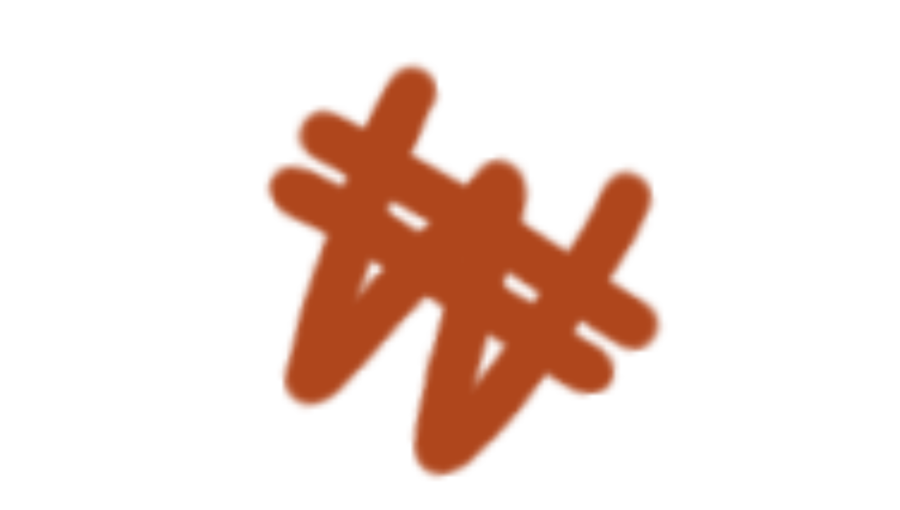
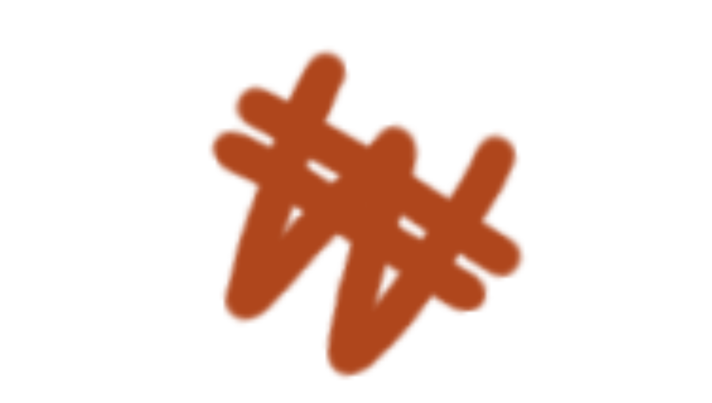

График показывает, что в 2016 году уровень расходов на НИОКР составлял 4,2% от ВВП.
В последующие годы наблюдается постепенный рост: 2017 г. — около 4,3%; 2018–2019 гг. — рост до 4,5%; 2020 г. — 4,6%;
2023–2024 гг. — показатель достиг 4,8%; В 2025 году — 4,9%.
График наглядно демонстрирует устойчивую тенденцию роста инвестиций в НИОКР в Южной Корее, что является ключевым фактором экономического успеха страны. Сочетание государственной поддержки и активности частного сектора позволяет Корее удерживать лидирующие позиции в глобальной научной и технологической гонке.
Интересный факт:
Интеграция науки и образования: Страна занимает лидирующие позиции по количеству выпускников STEM-специальностей (наука, технологии, инженерия, математика) и активно привлекает иностранных учёных.
 
